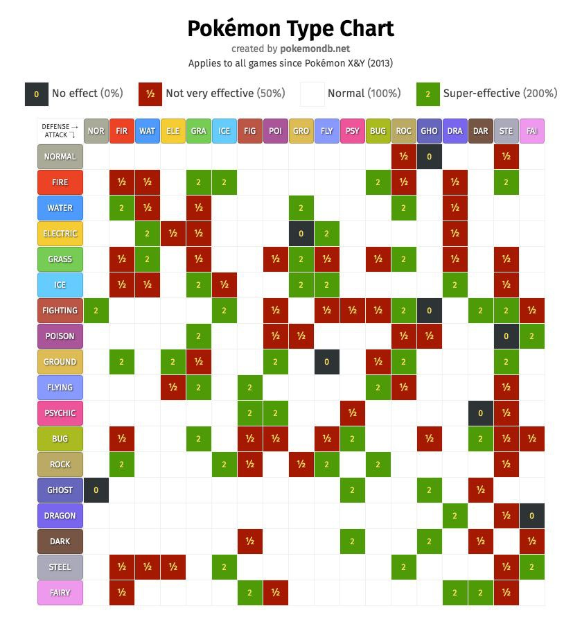

Exercícios Pokemon
PDFEspecificações base
Os exercícios a seguir podem ser feitos em TLA+ ou em Quint. Faça download (moodle) da especificação base que deseja usar (TLA+ ou Quint) e modifique-a conforme os exercícios pedem.
Na especificação base, ao examinar uma execução, é um pouco difícil entender o que aconteceu de um estado pra outro. Introduza uma variável que, a cada estado, grave qual foi o último ataque feito, de forma a facilitar a compreensão de uma execução. a) em Quint, sem tipo soma:
{ attacker: Pokemon, receiver: Pokemon, attack: str, damage: int }- Neste caso, você vai precisar inventar valores arbitrários para essa variável no estado inicial
b) em Quint, com tipo soma:
Option[{ attacker: Pokemon, receiver: Pokemon, attack: str, damage: int }]- O tipo
Optioné definido porOption[a] = Some(a) | None - Neste caso, o valor da variável pode ser
Noneno estado inicial, eSome(...)nos demais estados.
c) em TLA+, sem tipo. Pode ter valor
""no estado inicial.Pokemons com uma vantagem elemental tem mais changes de ganhar. Contudo, TLA+ e Quint não trabalham com estatísticas, e só conseguimos tirar conclusões do tipo "A sempre ganha de B" ou "A nunca ganha de B". Para ajudar com isso, não estamos especificando a chance de um ataque acertar. Mesmo assim, na especificação base, a vantagem elemental não garante que o pokemon vença a batalha. a) Escreva uma invariante dizendo que um pokemon do tipo fogo sempre ganha de um pokemon do tipo grama.
- Ao verificar/simular essa invariante, você deve encontrar um contraexemplo. Examine esse contraexemplo e responda: Em que cenário é possível que um pokemon do tipo grama vença um pokemon do tipo fogo?
b) Agora, implemente uma estratégia (semelhante ao que fizemos no jogo da velha) para que essa invariante seja satisfeita.
- A estratégia é bem simples: quando o pokemon tiver vantagem elemental, ele deve usar o ataque elemental.
Adicione um novo pokemon do tipo elétrico conforme a tabela de modificadores de dano a seguir
